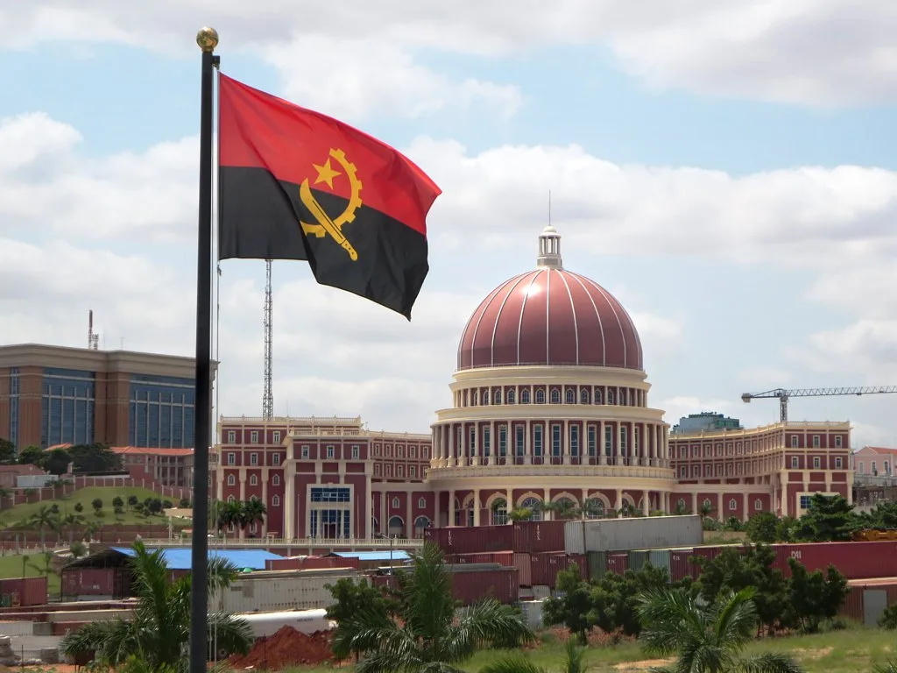

김승원 법무장관 후보자 청문회 앞두고 '검찰자료 유출' 공방 확산
오는 15일로 예정된 김승원 법무부 장관 후보자 인사청문회를 앞두고 여야 간 신경전이 갈수록 격화하고 있다. 국회 대정부질문 첫날부터 김 후보자를 둘러싼 신약 임상시험 승인 청탁 의혹과, 무소속 한동훈 의원이 공개한 자료의 유출 경위를 둘러싼 공방이 정면으로 충돌하면서 사실상 청문회를 방불케 하는 장면이 연출됐다. 여야는 국회 안팎에서 각각 상대 진영을 겨냥한 고발을 예고하는 등 정치적 긴장감이 고조되는 모습이다.
더불어민주당은 한 의원이 공개한 녹취록과 관련 자료가 검찰 내부 문서일 가능성을 제기하며 진상 규명을 촉구하고 나섰다. 당시 사건을 보고받았을 것으로 추정되는 보고라인을 특정할 수 있다는 주장도 함께 나왔다. 이에 대해 한 의원 측은 해당 자료를 검찰로부터 넘겨받은 사실이 없으며 공익 목적의 제보에 따른 것이라는 입장을 분명히 했다. 오히려 민주당이 근거 없는 주장으로 여론을 호도하고 있다며 김민석 민주당 대표를 허위사실 유포 혐의로 고발하겠다는 방침을 밝혀 양측의 신경전은 국회 밖 법적 다툼으로까지 번질 조짐을 보이고 있다.

김 후보자 본인을 둘러싼 검증도 동시에 진행되고 있다. 김 후보자는 최근 언론과의 접촉에서 과거 음주운전 전력에 대해 사과의 뜻을 밝혔다. 변호사로 활동하던 2008년 7월 음주운전 혐의로 수원지방법원에서 벌금 70만원을 선고받은 사실이 확인된 데 따른 것이다. 김 후보자는 심려를 끼쳐 송구하다는 입장을 밝히면서, 구체적인 경위와 이후 조치 등은 청문회 자리에서 상세히 설명하겠다고 말했다.
임상시험 승인과 관련한 식품의약품안전처 청탁 의혹에 대해서도 김 후보자 측은 기존 입장을 유지했다. 소규모 기업이 다국적 제약사의 압력에 밀려 임상시험 절차가 정상적으로 진행되지 못하는 불공정한 상황을 해소하기 위해 공익적 차원에서 민원을 전달한 것일 뿐이라는 설명이다. 그러나 야당 측은 이 같은 해명이 석연치 않다며 청탁 대가성 여부를 청문회에서 집중적으로 따지겠다는 방침이다.

공방은 국회 법제사법위원회로도 옮겨붙었다. 법사위는 이날 회의에서 김 후보자에 대한 인사청문 실시계획서와 자료 제출 요구의 건 등을 의결하며 오는 15일 청문회를 여는 데는 합의했지만, 청문회에 세울 증인 채택을 놓고는 여야가 다시 한번 충돌한 것으로 전해졌다. 여당은 임상시험 청탁 의혹 관련 인물들의 증인 출석을, 야당은 검찰자료 유출 경위를 밝힐 수 있는 인물들의 출석을 각각 요구하며 팽팽한 신경전을 이어간 것으로 알려졌다.
정치권에서는 이번 공방이 단순한 인사청문회 준비 과정을 넘어, 법무부 장관 임명을 둘러싼 여야의 근본적인 시각차를 드러내고 있다는 분석이 나온다. 검찰 개혁의 마지막 퍼즐로 꼽히는 법무부 장관 인선인 만큼 야당의 검증 공세가 한층 거세질 것으로 예상되는 가운데, 15일로 예정된 청문회에서 음주운전과 청탁 의혹, 자료 유출 논란 등 쟁점들이 한꺼번에 다뤄질 전망이어서 그 결과에 관심이 집중되고 있다. 여야가 청문회 전날까지도 증인 채택과 자료 공개 범위를 놓고 이견을 좁히지 못할 경우, 정작 청문회 당일 정책 검증보다 정쟁성 공방에 시간이 더 소요될 수 있다는 우려도 국회 안팎에서 함께 제기되고 있다.